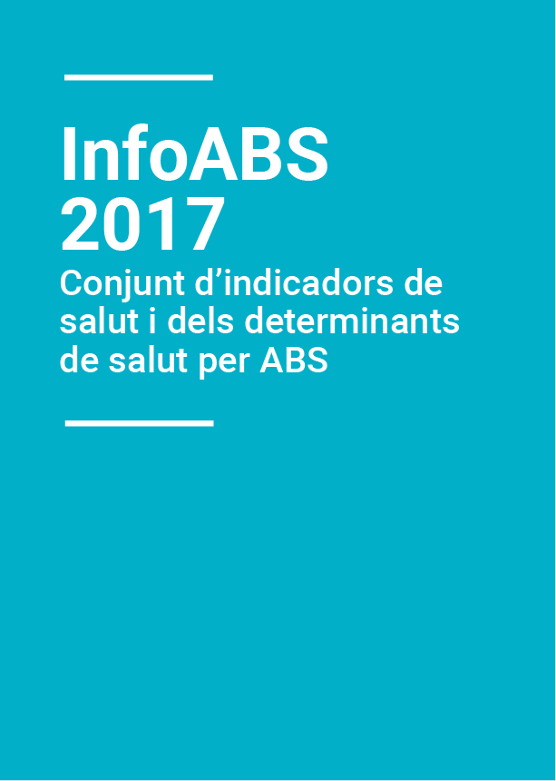

InfoABS 2017

Conjunt d’indicadors de salut i els seus determinants per Àrees Bàsiques de Salut (ABS) l’any 2017
Determinants de la salut
Característiques demogràfiques:
Estructura i procedència de la població
Composició de les llars
Conductes relacionades amb la salut:
Salut reproductiva
Consum de tabac, sobrepès i obesitat i activitat física
Condicions de vida i de treball
Estat de salut
Mortalitat
Malalties de declaració obligatòria *
Resultats de l’embaràs
Estat de salut percebut, trastorns crònics i salut mental
Ús de serveis sanitaris i pràctiques preventives
* Les dades encara no estan disponibles. Es poden consultar la de l’any previ a l’InfoABS de l’any 2016. Aquest apartat s’actualitzarà tan aviat com sigui possible.